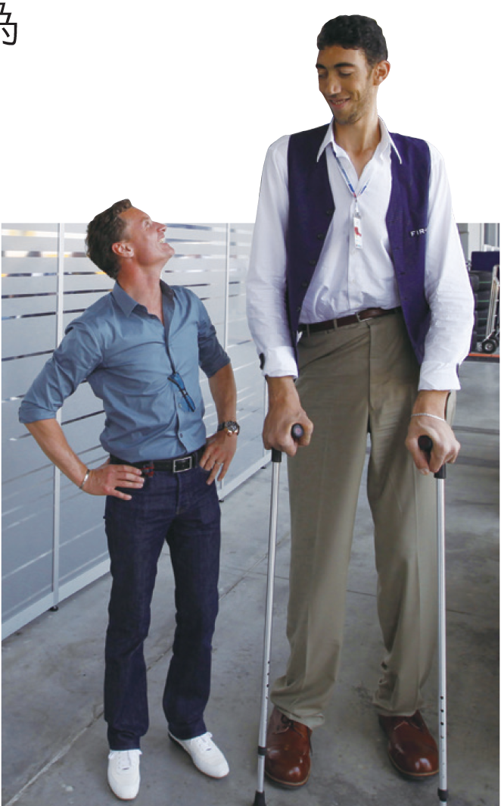

總指揮：腦垂腺
腦垂腺位於腦的底部，雖然體積很小，卻扮演著關鍵角色。腦垂腺分泌的生長激素是控制生長發育的主要激素，若在成長階段分泌過少或過多，會影響個體的發育，例如侏儒症和巨人症。此外，腦垂腺還可以分泌多種促進激素，影響其他內分泌腺體（如甲狀腺、性腺等）。因此，腦垂腺常被稱為人體內分泌系統的總指揮。

參與《綠野仙蹤》電影演出的侏儒症演員們（圖中拿獎牌者）。

罹患巨人症的科森，有251公分高。
📊 重點整理：生長異常比較表
請根據剛才的課文與圖片，選擇正確的選項填入表格中，完成「巨人症」與「侏儒症」的比較。
| 病症名稱 | 原因 (成長階段) | 特徵 |
|---|---|---|
| 生長激素分泌 | 骨骼過度生長，體型異常高大 | |
| 生長激素分泌 | 骨骼生長遲緩，身材明顯矮小，智力通常正常 |
📝 隨堂評量
(練習一) 觀念推論：總指揮的職責
腦垂腺被稱為內分泌系統的「總指揮」，這意味著如果將腦垂腺摘除，下列哪種生理現象最可能發生？
(練習二) 圖表分析：生長激素的秘密
科學家分析血液中生長激素的濃度變化，發現它呈現「脈衝式分泌」，且在夜間深度睡眠期間濃度最高。根據這項數據，對於一位想長高的國中生，下列哪項建議最符合科學依據？
(練習三) 多重選擇：控制範圍
腦垂腺分泌的「促進激素」可以直接調控下列哪些內分泌腺體的功能？（請選出所有正確答案，全對才給分）
（提示：胰島主要受血糖濃度直接控制）